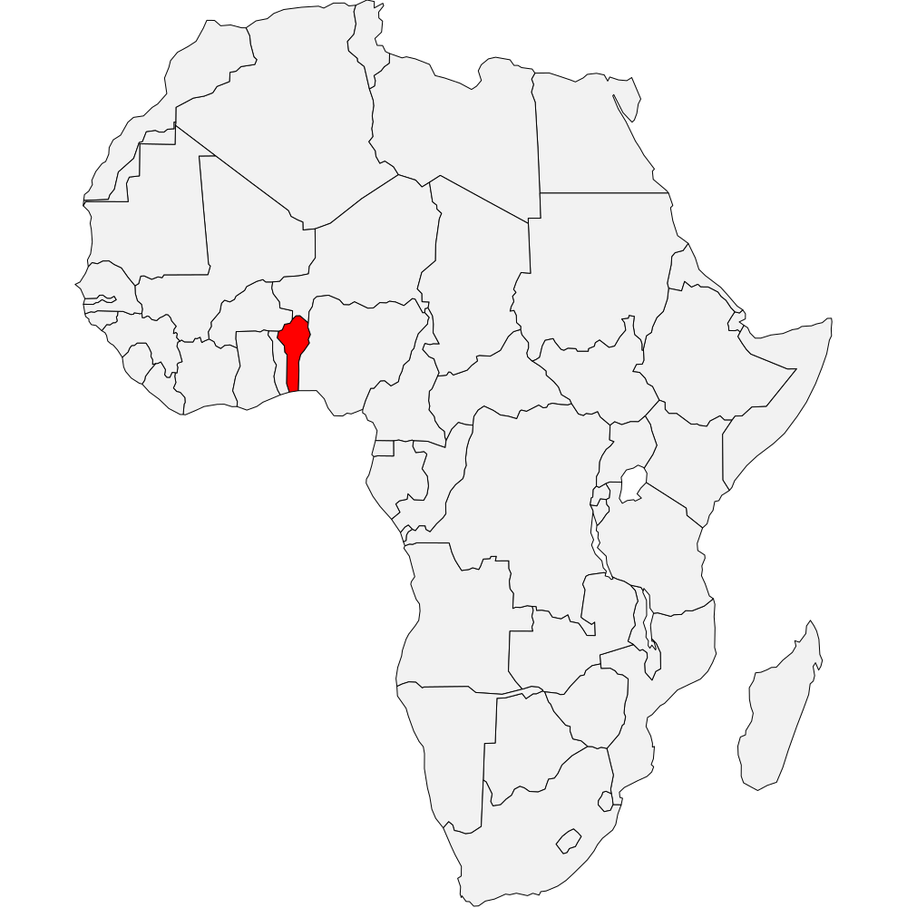

Renaitre de Nouveau s'engage à transformer des vies à travers le mondes en menant des actions concrètes au Bénin et en France. Notre organisation œuvre sans relâche pour venir en aide aux personnes démunies, offrant un soutien essentiel aux orphelins, aux jeunes en difficulté et aux veuves en situation précaire. Grâce à nos initiatives humanitaires et à notre engagement communautaire, nous apportons un souffle d'espoir là où il est le plus nécessaire, transformant ainsi les destins et laissant une empreinte positive dans le monde entier.